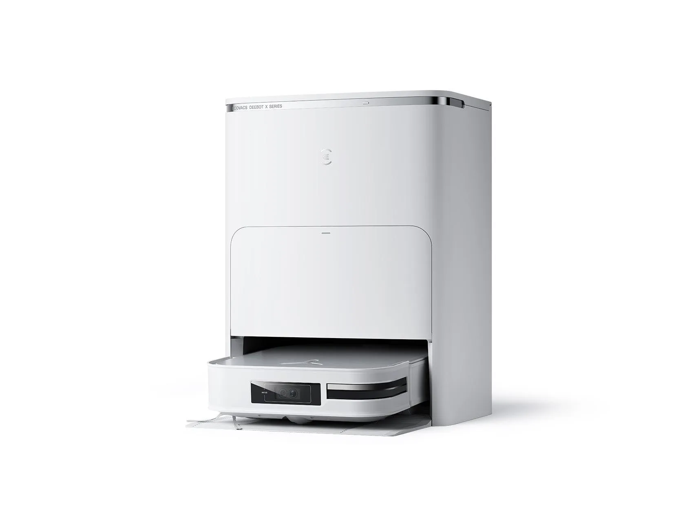

Service & Cleaning Companies
Gausium, Narwal, Roborock and Ecovacs in the full company landscape.
Companies
Before the humanoid hype, there was a quieter Chinese victory: the robot vacuum. Three brands — Ecovacs, Roborock and Narwal — turned a niche gadget into a category the world buys from China.

While the world was watching humanoid robots in 2025, a quieter Chinese export was already in millions of homes: the robot vacuum. China is the world's largest market for these machines — and the world's largest exporter of them. It is the clearest proof that Chinese robotics can win a global consumer category, not just an industrial one.
Suzhou's Ecovacs (科沃斯) started in 1998 as a vacuum-cleaner OEM — a factory making other people's products. Then its founder, Qian Dongqi, a former tool-factory manager, made a bet: that the vacuum could clean by itself. The pivot created the Deebot brand and effectively invented China's robot-vacuum category. Ecovacs listed in 2018, and two decades on it remains one of the world's largest robot-vacuum makers by revenue.
Beijing's Roborock (石头科技) came from a different world: Xiaomi-backed engineers, led by Chang Jing, who treated a vacuum as a software-hardware integration problem. Its lidar-equipped machines mapped homes room by room, and its engineering culture made it one of the most profitable consumer robotics firms in China. Listed on the STAR Market in 2020, Roborock consistently ranks among the world's top robot-vacuum brands by revenue.
Dongguan's Narwal (云鲸) attacked a different pain point: the mop. Its self-cleaning mop robots — robots that wash their own mop pads — became a hit and turned Narwal into a global brand, with overseas orders reaching the hundreds of millions of yuan in 2026 and a strategic partnership with European group Sebo. Founded by Zhang Junbin, an XbotPark protégé, Narwal is now valued above 10 billion yuan.
Why China wins at robot vacuums: a dense supply chain for motors, batteries and sensors; brutally fast iteration cycles; and a huge home market that generates the data and the scale to make products better — and cheaper — than anyone else can.
The robot-vacuum story is not a one-off. China is repeating the same playbook in commercial cleaning robots — Gausium now mops floors across dozens of countries — and in the humanoid race. Build the supply chain, iterate fast, price aggressively, then take the product global. The vacuum was the first proof; the humanoid may be the next.
Gausium, Narwal, Roborock and Ecovacs in the full company landscape.
From the "robot replacement" boom to XbotPark — the history that produced these brands.
The next act of the same playbook — seven companies chasing the world's humanoid market.
Narwal ↗ · Gausium ↗ · Roborock ↗ · Ecovacs ↗
From self-cleaning mops to 10 m/s humanoids — explore the full product line-up.